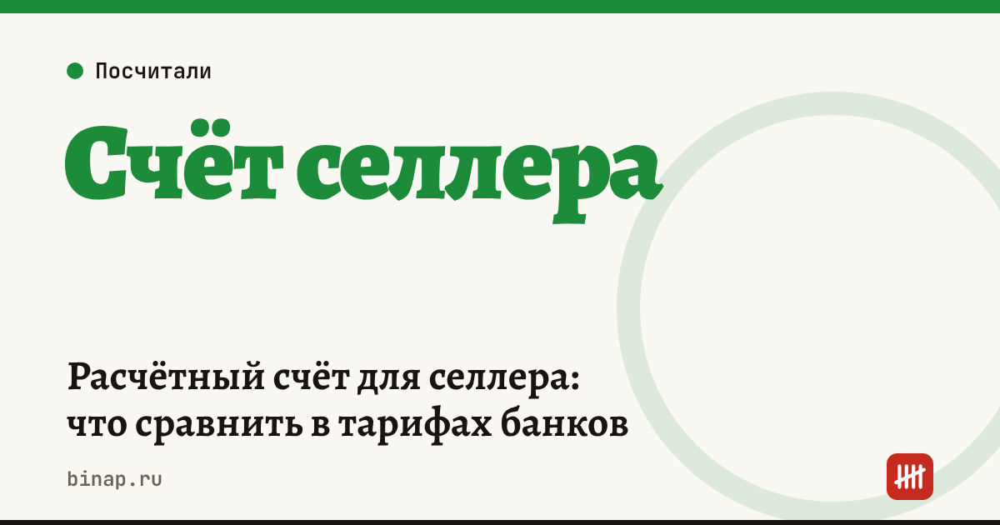

Расчётный счёт для селлера: что сравнить в тарифах банков

Лучший счёт для селлера — не тот, где дешевле обслуживание, а тот, где меньше всего вы заплатите за свой набор операций за год: входящие выплаты маркетплейса, платежи поставщикам, налоги, снятие наличных и валюта. Посчитайте это по формуле ниже на своих оборотах — и сравните 2–3 банка.
Коротко
- Выплаты маркетплейса приходят на расчётный счёт ИП или ООО — без счёта продавать как ИП или компания не получится.
- Сравнивайте годовую стоимость, а не цену обслуживания: обслуживание × 12 + платежи + снятие + валюта.
- Для селлера важны входящие платежи без комиссии, дешёвые платежи поставщикам и понятный порядок при резком росте оборотов.
- Держите запасной счёт в другом банке: если основной приостановят операции, выплаты и платежи не встанут.
Сроки, изменения и разборы для ИП и самозанятых — каждое утро в Telegram и MAX. Подпишитесь, чтобы не пропустить.
Что важно именно селлеру
| Что сравнить | Почему это важно |
|---|---|
| Входящие платежи | выплаты маркетплейса приходят раз в неделю — проверьте, что за зачисление нет комиссии |
| Платежи поставщикам и подрядчикам | у активного селлера их десятки в месяц: бесплатный лимит и цена сверх него |
| Переводы физлицам и на свою карту | вывод прибыли ИП и оплата самозанятым — частая скрытая статья расходов |
| Снятие наличных | если закупаете на рынках или у мелких поставщиков |
| Валютный счёт и ВЭД | если покупаете товар за рубежом: комиссия за валютный контроль и конвертацию |
| Лимиты и проверки по 115-ФЗ | при резком росте оборотов банк может запросить документы — важно, как быстро он работает с селлерами |
| Интеграции | выгрузка выписки в бухгалтерию и сервис учёта, отдельный «налоговый» счёт |
Формула годовой стоимости счёта
Стоимость за год = обслуживание × 12 + платежи сверх бесплатных × цена платежа × 12 + переводы физлицам × комиссия + снятие наличных × комиссия + валютные операции.
Пример (расчёт редакции, тарифы условные — подставьте реальные с сайтов банков на дату сравнения). Селлер: 40 платежей в месяц, переводы себе — 150 000 ₽ в месяц, наличные не снимает.
| Тариф А | Тариф Б | |
|---|---|---|
| Обслуживание | 990 ₽ в месяц, 10 платежей бесплатно | 2 490 ₽ в месяц, 50 платежей бесплатно |
| Платежи сверх лимита | 30 × 49 ₽ = 1 470 ₽ в месяц | 0 ₽ |
| Переводы себе | 1,5% с суммы → 2 250 ₽ в месяц | бесплатно до 300 000 ₽ → 0 ₽ |
| Итого за год | (990 + 1 470 + 2 250) × 12 = 56 520 ₽ | 2 490 × 12 = 29 880 ₽ |
Тариф с «дешёвым» обслуживанием оказался почти вдвое дороже: всё решают платежи и переводы. Поэтому считайте по своим операциям, а не по рекламе тарифа.
Как выбрать за 30 минут
- Выпишите свои обороты за последние 3 месяца: число платежей, сумма переводов себе и физлицам, снятие, валюта.
- Возьмите 2–3 банка и выпишите с их официальных сайтов тарифы на дату сравнения.
- Посчитайте годовую стоимость по формуле для каждого.
- Проверьте условия по блокировкам: что банк запрашивает при росте оборотов и как быстро отвечает.
- Откройте запасной счёт в другом банке — пусть на нём лежит резерв на налоги.
Открыть расчётный счёт для бизнеса онлайн: ссылка
Как вообще сравнивать банки для ИП — в разборе где открыть счёт ИП. Почему банк может приостановить операции и что делать — блокировка счёта по 115-ФЗ. Почему обслуживание дорожает — почему подорожал РКО. Все шаги продавца — в разделе «Селлерам».
Частые вопросы
Можно ли получать выплаты маркетплейса на личную карту? Если вы продаёте как ИП или ООО — нет, выплаты приходят на расчётный счёт по договору с площадкой. Смешивать деньги бизнеса и личные — путь к вопросам банка и налоговой.
Нужен ли второй счёт? Желательно: если основной банк приостановит операции, через запасной вы сможете платить поставщикам и налоги.
Как часто пересматривать тариф? Раз в полгода или когда обороты выросли в 1,5–2 раза: выгодный тариф для старта часто становится дорогим при росте.